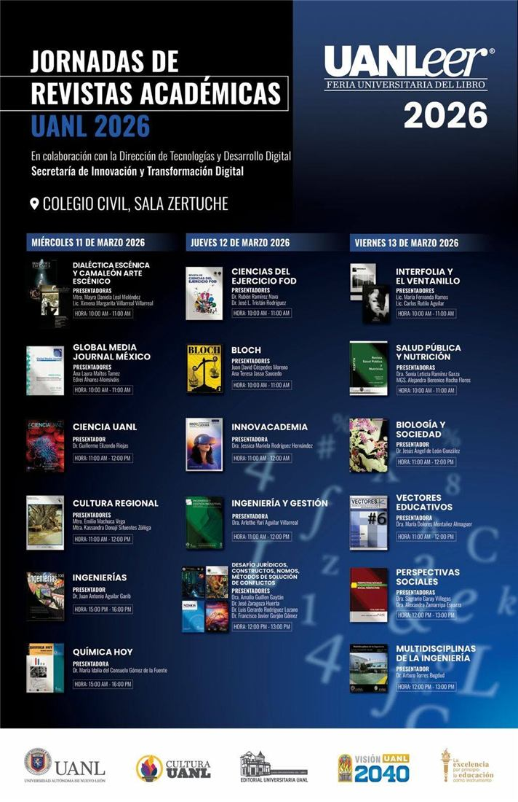

La ECE y la FCC-UANL presentan la Revista Vectores en UANLeer 2026
La Escuela de Ciencias de la Educación, bajo la dirección del Dr. Alejandro Javier Treviño Villarreal, y la Facultad de Ciencias de la Comunicación de la UANL, liderada por el Dr. Mario Humberto Rojo Flores, participaron en UANLeer 2026 con la presentación de la Revista Vectores.
La actividad reafirma el compromiso de ambas instituciones con la promoción de la lectura, la difusión del conocimiento y el fortalecimiento de comunidades académicas con vocación investigadora.
La Revista Vectores impulsa la investigación educativa con proyección nacional e internacional, respaldada por su equipo editorial.
Editor General: Dr. José Alfredo Fernández
Editor Técnico: Dr. José Gregorio Alvarado López
Editora Asociada: Dra. María Dolores Montañez Almaguer
Ver Revista Vectores

